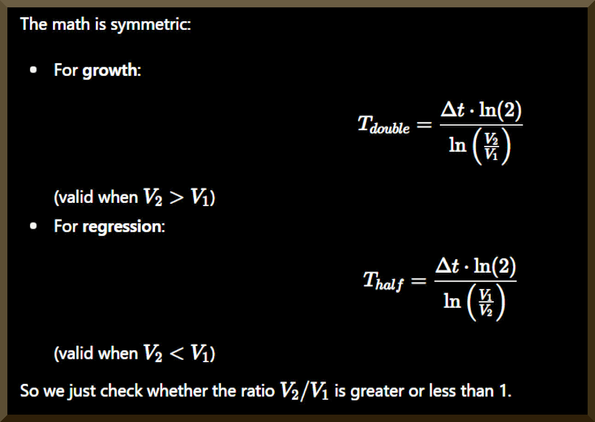
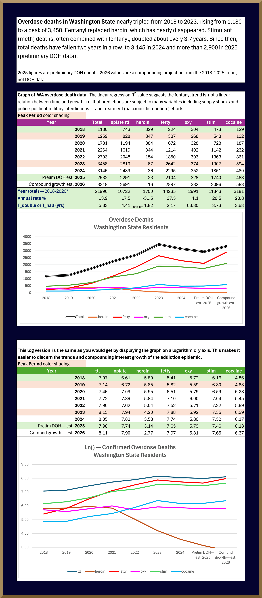

Bend the Curve · Washington Overdose Model
Default: 4 years (2026–2029); maximum 10. Beyond a few years the lines show what pure compounding implies, not a forecast.
| Year | Baseline | With Policies | Difference | T_d / Half-life (observed: from first row · projected: from 2025) |
|---|
This interactive simulation is built from Washington State Department of Health counts of confirmed overdose deaths among Washington residents (2018–2025; 2025 is preliminary). During the 2019–2023 surge, total deaths compounded at about 28.7% a year — doubling roughly every 2.7 years (about every 5.4 years if you use all 2018–2025 data, which includes the 2024 and 2025 declines). The model projects that compounding forward year by year from the actual 2025 count; observed years are shown as actual data and are never changed by the sliders.
Each slider removes its share of the growth rate. With both at 100% the trend reverses into a decline half as fast as the original growth (a doubling time of T years becomes a half-life of 2T years). For a series that is already declining, the sliders make it decline faster. The policy line is never allowed to fall by more than 50% per year (unless the series is already falling faster on its own).
Move the sliders to see how policy changes bend the curve and how many lives could be saved: Lives saved is the cumulative difference between baseline and policy deaths over the projection years. The chart, table, and T_double / half-life metrics update live.
This is a simplified illustrative model — the 35%/65% split and the strength of the levers are assumptions, not measured effects, and real results depend on consistent implementation in an open system — but it shows the power of addressing the two core drivers of the crisis.
| Year | Total OD | Opiates OD | Heroin | Fentanyl | Oxy | Meth | Cocaine | Alcohol |
|---|
This is an exponential (compounding) growth-or-decay model showing the Time-to-double or Half-Life of overdose deaths in Washington State:

Source: Washington State Department of Health (death certificates), “Confirmed Overdose Deaths among Washington Residents,” by year and substance, 2018–2025 — DOH Opioid and Drug Use Data Dashboard. Values are from DOH’s downloadable overdose-deaths data (statewide, annual counts; data file dated Oct. 12, 2026), which include DOH’s March 2026 revision of 2024 (3,145 deaths; previously reported as a preliminary 3,086) and minor revisions to earlier years. *2025 is preliminary: the sum of DOH’s 2025 quarterly counts in the same Oct. 12, 2026 file (total 2,932). DOH suppresses heroin quarters under 10, so the 2025 heroin value (23) is from DOH’s March 16, 2026 table. 2025 values may change when DOH finalizes them. Column names: Fentanyl = synthetic opioids; Oxy = prescription opioids other than fentanyl; Opiates = any opioid; Meth = psychostimulants; Alcohol = DOH “Alcohol Poisoning” category (2025 preliminary: 400). DOH alcohol poisoning category: deaths where acute alcohol poisoning was a cause; does not include alcohol-related crashes, falls, or liver disease. DOH codes alcohol poisoning as ICD-10 X45, X65, Y15, which are outside its “Any drug” definition (X40–X44, X60–X64, X85, Y10–Y14), so these deaths are not counted in Total OD.

Open the verification graphic full size · in this graphic the 2025 row is a compounding estimate from the 2018–2024 trend, not DOH data; the model now uses DOH’s preliminary 2025 counts.